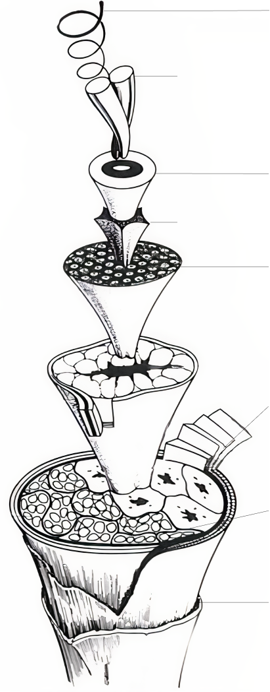

Шерсть и здоровье
Шерсть оказалась в центре внимания, а фабрика Вязань вяжет уже больше 15 лет, у наших специалистов набралось достаточно много знаний, чтобы помочь людям разобраться когда стоит купить себе новый свитер, а когда его лучше сжечь.
В эту статью я собрал опыт наших специалистов и данные из последних научных исследований.
Погружение в волокно
Определение качества шерстяного изделия
Ищите на шерстяной вещи знак качества Woolmark. Он означает, что фермеры и фабрика провели аудит и гарантируют, что изделие изготовлено из гипоаллергенной шерсти толщиной до 24 мкм, без химической обработки и красителей, содержит меньше 7% иных волокон, без вреда животным и окружающей среде.
Аллергия
Сама шерсть не является аллергеном, это следует из исследования, проведенного объединенными усилиями ученых 9 разных университетов.
В необработаной овечьей шерсти встречается ланолин, который может вызывать аллергию. Однако, согласно тому же исследованию, современная обработка шерсти не оставляет в ней ланолина в тех количествах, которые могут вызвать аллергию. Нарушение этого процесса может привести к аллергической реакции и раздражению у людей, склонных к аллергиям.
Раздражение кожи
Раздражение кожи от одежды в первую очередь связано с атопическим дерматитом (экземой). Ношение одежды из шерсти мериноса показало значительное улучшение состояния кожи и качества жизни у людей с этим заболеванием.
Производство
Когда приходит партия необработаной шерсти, мы проводим выборочную проверку в нашей лаборатории, приступаем к обработке только когда проверка пройдена. На фабрику шерсть поступает в прессованом виде, рабочие расфасовывают ее и погружают в станки.
Стираем шерсть, это убирает из шерсти грязь и примеси, которые могли попасть в шерсть на ферме. Разделяем на волокна специальными металлическими щетками, чтобы подготовить к изготовлению пряжи. Смешиваем волокна, чтобы придать им однородную структуру.
Обогащаем волокна шерсти минеральными маслами. Это облегчает обработку волокна в дальнейшем. Расчесываем шерсть на чесальной машине, где волокна пропускают через валики с тонкими проволочными зубцами. Они распутываются на отдельные пряди, из них удаляются остатки грязи. Из чесальной машины выходит гладкое, ровное волокно.
Скручиваем полосы в более тонкие нити. Для того чтобы они были прочнее, нити постепенно растягиваются и скручиваются. Готовая нить натягивается на бабину, из этой нити мы изготавливаем ткани.
Из каждой партии случайным образом отбираются нити и ткани для контроля качества во внутренней лаборатории. Раз в полгода мы приглашаем специалистов из Woolmark для подтверждения статуса сертифицированного производства.